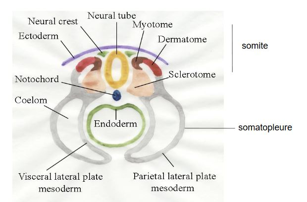

Les Gnathostomes
I) Apomorphies
Les Gnathostomes, possèdent des mâchoires ainsi que trois canaux semi-circulaire dans l'oreille interne. Les arcs branchiaux sont au milieu des branchies. Les axomes s'entourent de gaine de myéline (circulation plus rapide des messages nerveux).
La mâchoire permet une très forte diversification des régimes alimentaires de type macrophage.
II) Apparition de la mâchoire
Le squelette crânien des vertébrés est divisé en deux parties, le neurocrane et des arcs branchiaux ou arcs viscéraux constituent le Splanchnocrane qui est constitué de 7 paires d'arcs viscéraux. Les mâchoires peuvent provenir de la transformation des arcs viscéraux plus en avant de l'animal.
En effet, à l'aide de l'étude embryonnaire de certains vertébres, nous avons pu observer que les os sont de même forme que les arcs viscéraux avant de former petit à petit la mâchoire.
De plus, à l'aide de l'anatomie comparé, on a comparé l'énervation du crâne chez les Gnathostomes et les Cyclostomes. La mâchoire chez les Gnathotosmes est innervée par plusieurs nerfs crâniens. Le 7e nerf sert à maintenir la mâchoire.
La mâchoire n'a pas toujours la même organisation. Les différentes modalités de suspension de la mâchoire, (liaison au neurocrâne).
La mâchoire supérieur forme le Ptérygocarré et la mâchoire inférieure, le cartilage de Mechel. Ceci est homologue du premier arc viscéral que l'on appelle l'arc mandibulaire. Il existe d'autres pièces osseuses afillé à la mâchoire. Chez certains Gnathotosmes on a l'os hyomandibulaire, homologue à l'arc viscéral, l'arc hyoidien.
Chez les Teleostéens, on a une suspension hyoitylique.
Chez les Tétrapodes, la mâchoire supérieur est directement liée au neurocrâne, suspension autotylique.
III) Origine des membres pairs
Les Téléostéens possèdent des nageoires pairs antérieurs appelés les pterygiens.
Sur des fossiles des Vertébrés dépourvus de nageoires paires, présentaient sur la face ventrale, deux replis du tégument longitudinaux faisant toute la longueur de l'animal. Les nageoires ptérygiens seraient apparus par fragmentation des deux bourrelets.
IV) Les grands groupes de Gnathostomes
Au sein des Gnathostomes nous avons,
- Les Chondrichthyens
- Les Austélitiens
A) Les Chondryctiens
Les Chondrychtiens ont un taux sanguin d'urée élevé, disparition des poumons et présence de ptérygopodes chez le mâle.
Les Chondryctiens se divisent en deux groupes :
- Les Sélaciens, requins et raies
- Les Holocéphales ou Chimères
Les Chondyctiens possèdent un cartilage, matrice extra cellulaire très importance. C'est un tissu souple et elastique, ainsi qu'un tissu osseux, matrice extra cellulaire minéralisé.
Les os ont deux origines possible. Le squelette axial est formé à partir des somites.

Les os sont formés à partir du cartilage.
La nageoire n'a pas la même architecture chez tous les Chondrictyens.
- nageoire tribasale, on a trois os à la base reliant la nageoire à la ceinture puis sont inserer une grande quatité d'os
1) Les Sélaciens
Les Sélaciens ont un appareil respiratoire comportant 5 paires de fentes branchiales fonctionnelles. Chaque fente possède un petit clapet est peu s'ouvrir indépendamment des autres. Ils possèdent des écailles placoïdes, écaille, formées à partir du derme. Elles sont fortement minéralisées, car constitué d'une partie basale osseuse recouverte par la dentine qui est recouverte par un émail. Ce sont des dents réparties sur l'ensemble du corps de l'animal.
a) Les requins = Pleurotrèmes
Les fentes branchiales sont latérales.
Les requins possèdent des régimes alimentaires différents entre eux:
- poissons (Requin taupe, dents étroites et pointes)
- mammifères blancs (Requin blanc)
- crustacés (Roussettes, dents en pavés)
- plancton (Requin pèlerin, placton filtré par des branchiospines)
Les requins prédateurs possèdent des detections sensorielles permettant de détecter les proies, dont les ampoules de Lorenzini, des organes sensoriels dispersés dans le tégument. Ils sont capable de detecter les champs electrique émis par les proies.
b) Les hypotrèmes
Les raies possèdent des écailles placoïdes. Les dents sont en pavés. Plusieurs espèces possèdent des organes electriques possédant plusieurs fonctions dont neutraliser les proies.
2) Les Chimères
Les Chimères vivent dans des eaux très profondes.
B) Les Ostéichtyens, poissons osseux
Les poissons osseux possèdent des sacs aériens connectés au tube digestifs. Il existe deux lignées :
- les Sarcoptérigiens
- les Actinoptérygiens, poissons à nageoires rayonnées, possédant les Chondrostéens et les Téléostéens.
1) Les Actinoptérygiens
a) Les Chondrostéens
"Poissons" qui ont un squelette encore largement cartilagineux. Ils sont peu diversifiés, se caractérisant par la présence de barbillions sensoriels en avant de la bouche. Leurs corps est recouvert de 5 rangées de plaques osseuses cuirassés qui protègent le corps. Leur nageoire caudale est hétérocerque. Groupe des esturgeons, poissons d'eau douce.
b) Les Téléostéens
La nageoire caudale est homocerque. Les écailles sont élasmoïdes, écailles formés par le derme. Elles sont osseuse et moins minéralisés que les écailles placoïdes. On en distingue deux types :
- type cycloïdes possédant des stries concentriques permettant de calculer l'âge du poisson
- type cténoïde, possédant des épines à la base
Les nageoires pairs (pelviennes et pectorales) sont des nageoires rayonnées/ pluribasales reliés aux os de la ceinture par de nombreux os.
Les Téléostéens se forment une vessie gazeuse, qui est une ex-croissance se formant sur le pharynx au stade embryonnaire. Elle garde sa liaison avec le tube digestif. Lorsqu'elle est en relation avec celui ci, la disposition est physostome. Cependant, durant le developpement, elle va se détacher du tube digestif, la disposition est physoclyste. Elle va servir de flotteur et baisser la densité et l'animal va pouvoir se stabiliser à faible profondeur. Du côté ventrale, une glande gazeuse va permettre de faire passer par transport actif, le sang vers la vessie gazeuse.
La ligne latéral est un organe sensoriel qui s'étire sur tout le côté de l'animal, ligne au niveau de laquelle, les écailles sont percées d'un petit canal qui permet à l'eau de venir en contact de cellules sensorielles cillées à la pression et au mouvement de l'eau.
Les Téléostéens vont migrer, certaines vont s'effectuer dans le même milieu de vie, migration holobiotique comme le hareng qui l'effectue en milieu marin (thalassique).
D'autres migrations vont s'effectuer entre deux milieux. La migration est amphibiotique comme le saumon. Le saumon se reproduit près des sources dans les cours d'eau mais vit en milieu marin. Le saumon va passer 3 ans dans les cours d'eau et lorsqu'il atteint une taille suffisante, il va entamer une migration vers l'aval, catadrome (amont vers l'aval). Le Saumon va se modifier en arrivant dans l'estuaire (smoltification) engendrée par des bouleversements hormonaux qui vont adapter le saumon à la vie en milieu salée. A la maturitée sexuelle, ils se reproduisent, dans les cours d'eau où ils sont nés Homing, migration de frai où le saumon va se modifier. La migration de l'aval vers l'amont est anadrome.
La migration de l'anguille est l'inverse de la migration du saumon. L'anguille vit dans l'eau douce et va migrer vers le milieu marin en utilisant le courant marin pour se reproduire au large du golf du Mexique à 1000 - 2000 m.
2) Les Sarcoptérygiens
La nageoire des Sarcoptérygiens est monobasale, elle est reliée à la ceinture par un seul os.
a) Les Actinistiens
Ils sont representés par deux espèces, le coelacanthe, espèce vivant dans l'Océan Indien. C'est un taxon Lazare (diparaît puis réapparaît).
b) Les Rhipidistiens
Ce sont des espèces qui possèdent des poumons fonctionnels. Le coeur possède deux oreillettes dont les dipneuses faisant la double respiration "poissons vivant dans des eaux eutrophes, chargés en MO. Ces "poissons" vont chercher de l'air en surface et le CO2 est rejeté via les branchies.